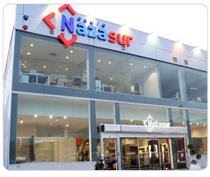

Historia de Grupo Nazasur
Fercor
La aventura empresarial de Grupo Nazasur, nace hace ya tres décadas, con la creación de Pavimentos y Alicatados Fercor, pequeña empresa familiar, dedicada al mundo de la construcción y la decoración, que en sus inicios, sólo contaba con una pequeña tienda de azulejos. Desde entonces, el trabajo constante y la adaptación a las nuevas tendencias y novedades del mercado, han sido sus premisas.
Procecon
Fruto de ese trabajo, surge Procecon (Procesos Constructivos Nazasur), empresa que comenzó realizando pequeñas obras y que ha conseguido un importante protagonismo en el panorama de la construcción en Andalucía, gracias a su consolidada labor tanto en obras públicas como privadas, por la gran calidad de sus acabados y terminaciones.
Grupo Nazasur
La adaptación a los nuevos tiempos, atendiendo a la creciente demanda de viviendas con una óptima relación calidad-precio, culmina en la creación de Grupo Nazasur. Destacada promotora inmobiliaria, que abarca todo el área metropolitana de Granada, materializando los sueños de todos aquellos que confían en su contrastada experiencia.

Nueva nave de exposiciones de
Grupo Nazasur